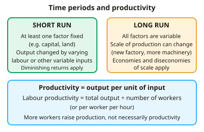

A-level Economics Year 12 · Topic 4
Production, costs and revenue
This topic explains how firms turn inputs into output, what it costs them, and how they decide how much to produce.
We will cover productivity, the short and long run, diminishing returns, and the shapes of cost curves.
Then we look at economies of scale, revenue, profit maximisation where marginal cost equals marginal revenue, and other objectives firms may pursue.
- 7 subtopics
- 174 questions
- Free: 4.1 notes and 10 questions
In this topic
- 4.1Production, productivity and the short run versus the long runFree below · 27 questions
- 4.2The law of diminishing returnsOpen in Full Marks · 19 questions
- 4.3Costs of production: fixed, variable, average and marginal cost curvesOpen in Full Marks · 33 questions
- 4.4Economies and diseconomies of scale, long-run average cost and minimum efficient scaleOpen in Full Marks · 29 questions
- 4.5Revenue: total, average and marginal revenue and the link to elasticityOpen in Full Marks · 18 questions
- 4.6Profit: normal and supernormal profit, and profit maximisation (MC = MR)Open in Full Marks · 21 questions
- 4.7Firms' objectives: revenue maximisation, sales maximisation, satisficing and other aimsOpen in Full Marks · 27 questions
4.1 · Free notes
Production, productivity and the short run versus the long run

Key points
- Production is the process of converting inputs (factors of production) into outputs of goods and services. Total output is the amount produced in a given period.
- The four factors of production are land (reward: rent), labour (wages), capital (interest) and enterprise (profit).
- Productivity is output per unit of input, a measure of efficiency. Labour productivity = total output ÷ number of workers (or ÷ total hours worked).
- Production and productivity are different. Output can rise simply by employing more workers, with no change in productivity. Productivity rises only if output per worker rises.
- The short run is the period in which at least one factor of production is fixed, usually capital or land. Output can be changed only by varying the variable factors, such as labour.
- The long run is the period in which all factors are variable. The firm can change its scale of production, for example by building a new factory. This is where economies and diseconomies of scale arise.
- The short run and long run are not fixed lengths of time. They differ between industries: a market stall may adjust in days, while a nuclear power station may take decades.
- Capital-intensive production uses a high proportion of capital to labour (e.g. car manufacture with robots). Labour-intensive production uses a high proportion of labour (e.g. hairdressing).
- Specialisation and division of labour raise productivity because workers become more skilled, less time is lost switching tasks and each person does what they do best. Drawbacks include boredom, monotony and over-dependence on each stage.
- Labour productivity can be raised by training, investment in capital and technology, better management and improved worker motivation.
- Productivity growth (%) = (change in output per worker ÷ original output per worker) × 100. Always show your working and state the units, e.g. units per worker per hour.
In more detail
- Worked productivity growth: output per worker rises from 40 to 46 units a day → (46 − 40) ÷ 40 × 100 = 15% growth.
- Short run vs long run: a restaurant can hire more staff tomorrow (short run, kitchen fixed), but building a bigger kitchen takes months (long run).
- Unit labour costs: unit labour cost = total labour cost ÷ output. If wages rise 3% but productivity rises 5%, unit labour costs fall and competitiveness improves.
- Exam tip: 'production' is total output; 'productivity' is output per unit of input. Don't use them as if they mean the same thing.
Practice
Production, productivity and the short run versus the long run: 10 questions
Pick an answer to check it, or open the answer for the explanation.
1. Which is the best definition of productivity?
- The total revenue earned from selling output
- Total output produced by a firm in a year
- The number of workers employed by a firm
- Output per unit of input, such as per worker per hour
Show answer
D: Output per unit of input, such as per worker per hour. Productivity measures efficiency: output per unit of input, e.g. per worker or per hour. Total output is production, which can rise just by using more inputs.
2. A firm makes 4,800 units with 40 workers. It then makes 5,400 units with 45 workers. What happens to labour productivity?
- It rises by 12.5%
- It rises by 10%
- It falls
- It is unchanged at 120 units per worker
Show answer
D: It is unchanged at 120 units per worker. 4,800 ÷ 40 = 120 and 5,400 ÷ 45 = 120. Total output rose 12.5%, but output per worker did not change.
3. In economics, the short run is the period in which
- less than one year passes
- all factors of production are fixed
- at least one factor of production is fixed
- a firm can only change its prices
Show answer
C: at least one factor of production is fixed. The short run is defined by at least one fixed factor, not by a calendar length. In the long run all factors are variable.
4. Which change is a short-run adjustment for a bakery?
- Hiring extra part-time staff on the existing premises
- Building a second, larger bakery
- Installing a new, bigger oven line
- Moving to bigger premises
Show answer
A: Hiring extra part-time staff on the existing premises. Hiring more labour changes a variable factor while premises and ovens stay fixed. The other options change fixed factors, which is only possible in the long run.
5. Which statement about the long run is correct?
- Only labour can be varied
- It lasts exactly five years for all firms
- Its length differs between industries
- At least one factor is still fixed
Show answer
C: Its length differs between industries. The long run is the period over which all factors can vary, and this takes longer in some industries (e.g. power stations) than others (e.g. market stalls).
6. A factory employs 30 workers, each working 8 hours a day, and produces 2,400 units per day. What is labour productivity per hour?
- 8 units per worker-hour
- 300 units per worker-hour
- 80 units per worker-hour
- 10 units per worker-hour
Show answer
D: 10 units per worker-hour. Total hours = 30 × 8 = 240. 2,400 ÷ 240 = 10 units per worker-hour. 80 is output per worker per day.
7. Which is a potential disadvantage of division of labour?
- Less time is lost moving between tasks
- Workers become more skilled at one task
- Repetitive work may cause boredom and lower motivation
- Output per worker always falls
Show answer
C: Repetitive work may cause boredom and lower motivation. Repetitive, narrow tasks can cause monotony and poorer quality. The other options are benefits or an incorrect claim.
8. Which pairing of factor of production and its reward is correct?
- Capital – wages
- Land – rent
- Labour – profit
- Enterprise – interest
Show answer
B: Land – rent. Land earns rent, labour wages, capital interest and enterprise profit.
9. A firm doubles its workforce and its output doubles. Which statement is correct?
- Neither production nor productivity has changed
- Productivity has doubled but production is unchanged
- Both production and labour productivity have doubled
- Production has risen but labour productivity is unchanged
Show answer
D: Production has risen but labour productivity is unchanged. Output per worker is the same, so productivity is unchanged. Output has doubled, so production has risen.
10. Which is most likely to raise labour productivity in the long run?
- Employing more workers with the same equipment
- Investment in new technology and worker training
- Reducing the number of hours of production
- A fall in the price of the firm's product
Show answer
B: Investment in new technology and worker training. Better capital and skills raise output per worker. More workers on fixed equipment may even lower productivity.
Keep going in Full Marks
Full Marks has 27 questions on Production, productivity and the short run versus the long run (17 more than here), set out in practice levels. You also get notes and 3D models for all 7 subtopics of Production, costs and revenue, plus games, timed exams and past papers.
On your exam board
Not in the OCR, Edexcel and Cambridge specifications.